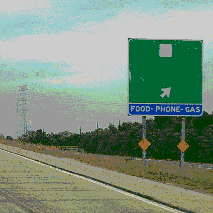

--- enter
==> [once] intro
==> [highwayStep>=4] walked-once
--- intro
[cont] I love to go for a drive!! {nice|you drive?}
You may need your keys though.. {for what?}
==> click
--- walked-once
==> [once] walked
--- walked
[cont] I'm getting tired just looking at you!
We'll never get there at this rate..
==> click
--- click
Gosh isn't walking tiring? Wouldn't you like to get your keys? {yes.}
==> click
--- has-keys
Yes!! Put your keys in the car and we'll go for a drive!
==> has-keys